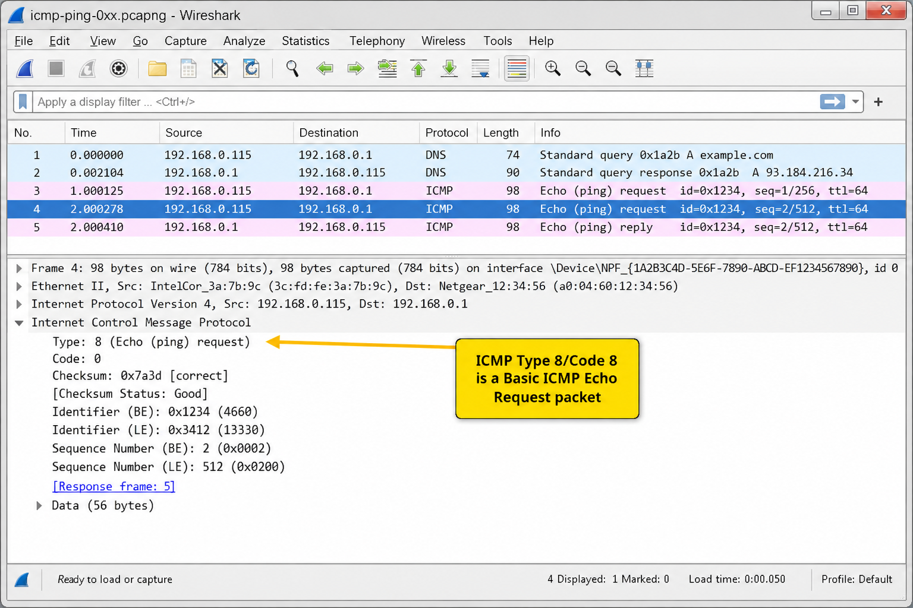
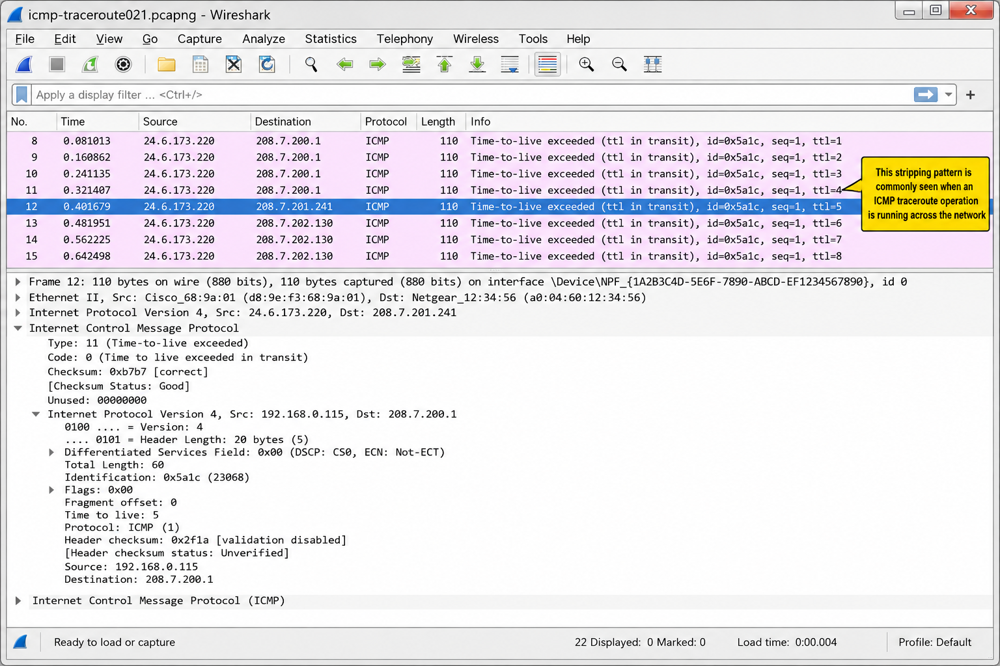
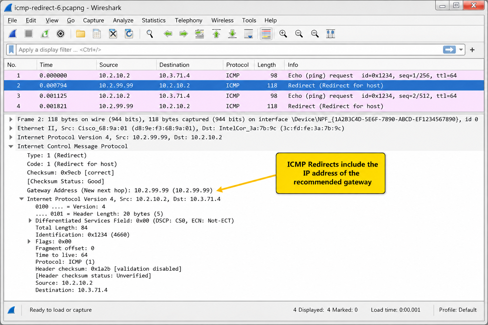
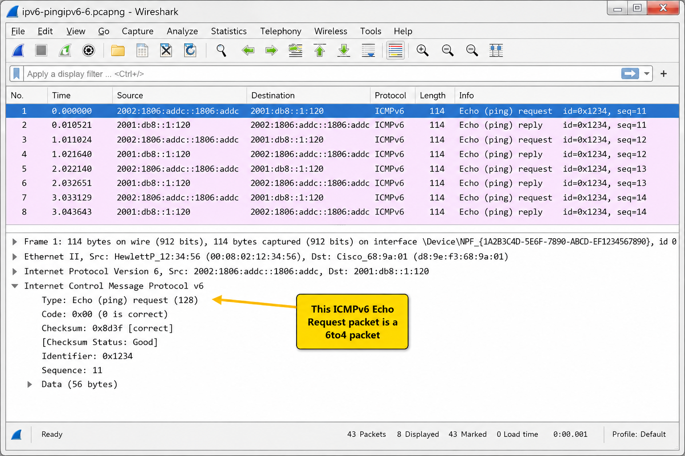
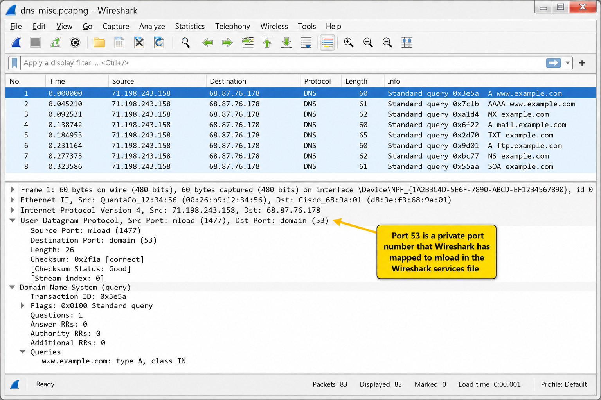
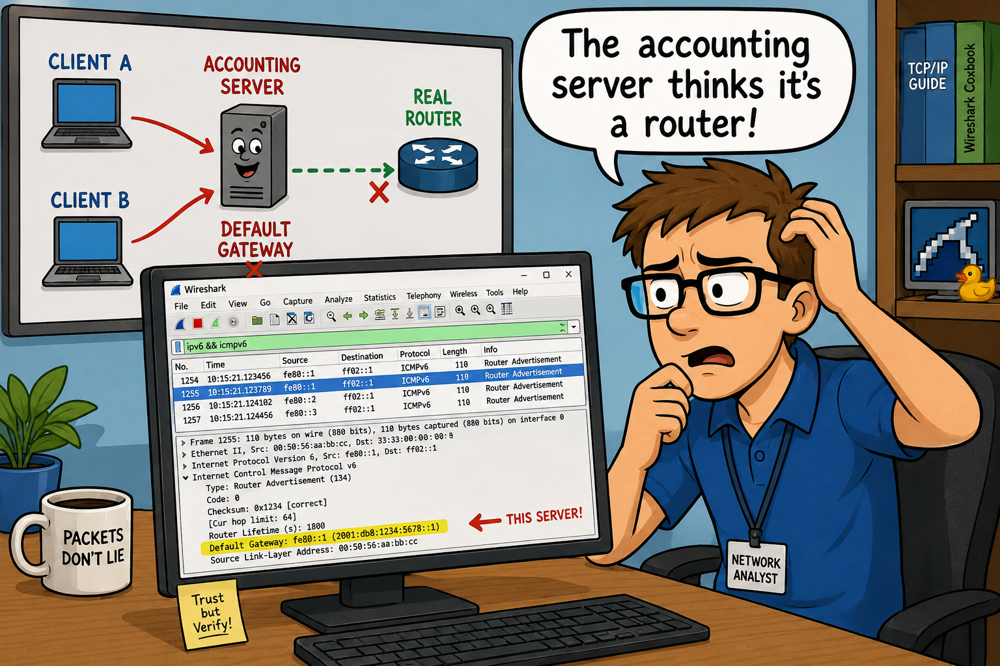

ICMP is a messaging layer for IP — it reports errors, provides echo tests, and signals routing information. Because ICMP packets carry no TCP or UDP header, port-based filters cannot block them. Many ICMP packets include a copy of the original IP header and first 8 bytes of the packet that triggered the ICMP response.
- ICMP Destination Unreachable (Type 3) responses to TCP handshake SYN packets are unusual. What does this suggest about the target, and why is it different from a TCP RST response?
- Why should you never block ICMP Type 3, Code 4 (Fragmentation Needed) packets on a firewall?
The Purpose of ICMP
ICMP is used as a messaging system for errors, alerts, and general notifications on an IP network. ICMP is defined in RFC 792. ICMP packets do not contain a UDP or TCP header — port filtering cannot affect ICMP traffic.
Key ICMP message categories:
- Echo messages (Type 8/0): Used by ping and traceroute. Too many may signal reconnaissance or DoS.
- Redirect messages (Type 5): Used by routers to indicate a better path. If NOT sent by a router, consider it suspect.
- Destination Unreachable messages (Type 3): Explain why a packet could not be delivered. Many of these could indicate a UDP port scan or a misconfigured service.

Analyze Normal ICMP Traffic
ICMP-based pings use ICMP Type 8 (Echo Request) and ICMP Type 0 (Echo Reply). Setting the Time column to Seconds Since Previous Displayed Packet with an ICMP filter provides round-trip time values more granular than command-line ping.

ICMP-based traceroute sends Echo Requests with incrementing TTL values. Each router along the path that receives TTL=1 sends back ICMP Type 11, Code 0 (Time Exceeded), revealing its IP address.

ICMP Redirect
Figure 216 shows an ICMP Redirect packet (Type 5/Code 1) pointing to another gateway at 10.2.99.98. This is sent when a receiving router identifies a better router for the sender. Redirects should only be sent by routers. Upon receipt, a host should update its routing table.

icmp. Display: icmp or icmpv6.ICMP packet types define the category of message; the Code field provides detail within that type. Type 3 (Destination Unreachable) has 16 different codes. Understanding which codes indicate which kind of failure lets you pinpoint the problem without moving the analyzer.
- ICMP Type 3 Code 1 (Host Unreachable) versus Code 3 (Port Unreachable): what infrastructure element is likely generating each, and what does it tell you about the path?
ICMP Types & Codes
ICMP packets only require three fields after the IP header: Type, Code, and Checksum. Some packets contain additional fields.
Key ICMP Types
| Type | Name | Notes |
|---|---|---|
| 0 | Echo Reply | Ping response |
| 3 | Destination Unreachable | 16 codes. Most commonly seen ICMP type in troubleshooting. |
| 5 | Redirect | Better path available. Should only come from a router. |
| 8 | Echo Request | Ping request. Traceroute uses these with incrementing TTL. |
| 11 | Time Exceeded | Code 0: TTL expired in transit (traceroute). Code 1: Fragment reassembly time exceeded. |
| 13 | Timestamp | Used for OS fingerprinting — watch for these |
| 17 | Address Mask Request | Used for OS fingerprinting — watch for these |
Type 3 — Destination Unreachable Codes
| Code | Name | Meaning |
|---|---|---|
| 0 | Net Unreachable | Router knows the network but believes it is not up |
| 1 | Host Unreachable | Router knows the host, but got no ARP reply (host is down) |
| 2 | Protocol Unreachable | Protocol in IP header cannot be processed (seen in IP scans) |
| 3 | Port Unreachable | No service listening on that port. Many = UDP scan. TCP SYN + ICMP 3/3 = firewalled port |
| 4 | Fragmentation Needed, DF Set | Router needed to fragment but DF bit was set. Never block this code! (MTU/black hole detection) |
| 9/10/13 | Administratively Prohibited | Firewall blocking. You may not want to advertise these. |
Filter on ICMP Traffic
| Filter | Description |
|---|---|
icmp.type==8 | ICMP Echo Request (ping) |
icmp.type==8 || icmp.type==0 | Ping request or response |
icmp.type==11 | Time Exceeded (traceroute hops) |
icmp.type==3 && icmp.code==4 | Fragmentation Needed/DF Set (don't block!) |
icmp.type==13 || icmp.type==15 || icmp.type==17 | Timestamp/Info/Address Mask (OS fingerprinting) |
tcp && icmp.type==3 | ICMP Dest Unreachable in response to TCP (firewalled port) |
icmp or icmp6. Display filter: icmp or icmpv6.ICMPv6 expands on ICMP's role significantly. In IPv6, ICMPv6 handles not only error reporting and echo, but also neighbor discovery (replacing ARP), duplicate address detection, and router discovery. ICMPv6 Echo uses Types 128/129 instead of 8/0.
- ICMPv6 Neighbor Solicitation (Type 135) sent from source address :: has a special meaning. What is it, and which IPv4 mechanism does it correspond to?
Basic ICMPv6 Functionality
RFC 4443 defines ICMPv6. The packet structure is the same as ICMP. ICMPv6 plays several critical roles in IPv6 communications:
| Type | Name | Role |
|---|---|---|
| 1 | Destination Unreachable | Replaces IPv4 ICMP Type 3 |
| 2 | Packet Too Big | Path MTU Discovery (replaces ICMP Type 3/Code 4). Only code value = 0. Contains MTU field. |
| 3 | Time Exceeded | Code 0: Hop limit exceeded. Code 1: Fragment reassembly timeout. |
| 128 | Echo Request | IPv6 ping (replaces IPv4 Type 8) |
| 129 | Echo Reply | IPv6 ping reply (replaces IPv4 Type 0) |
| 133 | Router Solicitation | Client asks routers to send Router Advertisements immediately |
| 134 | Router Advertisement | Routers advertise presence, M/O bits, prefix info |
| 135 | Neighbor Solicitation | Replaces ARP. Also used for Duplicate Address Detection (src=::) |
| 136 | Neighbor Advertisement | Response to Neighbor Solicitation |
| 137 | Redirect | Replaces IPv4 ICMP Type 5 Redirect |

icmpv6.type==133 for RS, (ipv6.src==::) && (icmpv6.type==135) for DAD.Case Studies
A customer complained that some of their hosts could not reach the internet on certain days — rebooting workstations would fix it temporarily.
The traffic showed the clients transmitting ICMPv6 Router Solicitations because the default gateway provided by the DHCP server did not reside on the local network. An accounting server (a Sun host) was configured to respond with Router Advertisements. That Sun host was not actually a router.
If the Sun host's Router Advertisement arrived before the Cisco router's Router Advertisement, the client used the Sun host's IP address as its default gateway. When the clients needed to communicate with hosts on other networks, packets were sent to the Sun box — and discarded, because it didn't offer routing services.
It was easy to spot the problem in just a few minutes by examining the ICMP/ICMPv6 traffic and noticing the non-router was sending Router Advertisements.

ICMP offers a messaging service to indicate network configuration problems, unavailable services, hosts that are too far away, fragmentation problems and more. ICMP packets do not contain TCP or UDP headers — port filtering cannot block ICMP traffic.
Many ICMP packets contain the original IP header that triggered the ICMP packet. ICMP Echo Requests are commonly used for ping tests and traceroute operations.
ICMPv6 plays several very important roles in IPv6 communications including duplicate address detection (Type 135 from ::), neighbor discovery, router solicitation/advertisement, and error reporting. ICMPv6 Echo uses Types 128/129.